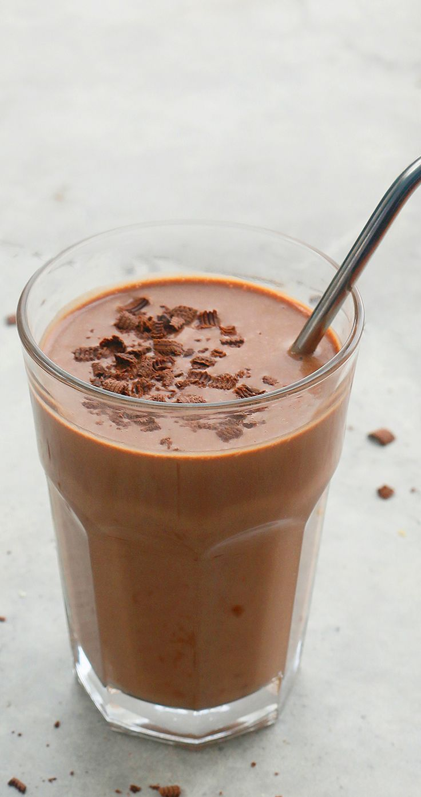

Healthy Chocolate Milk

Luscious Chocolate drink that is beleived to be a gift from the Gods.
Other than its rich chocolate taste, it is packed with nutrients that helps you to be strong and healthy.
Ingredients
- Cacao Powder---1.5 tbsp
- Raw Goats milk--- 1 cup
- Raw Honey--- 1 tbsp
- 85% sugar free chocolates 1 tspn
- Large eggs---2 pcs
Directions
- Crack your eggs and separate the yolks from the whites.
- Whisk the yolks in the saucepan and add Raw Goats milk.
- Warm the mixture in low heat for about 1min and 50secs.
- Put the Cacao powder in your favorite mug.
- Add the warm milk gradually to avoid Cacao powder solids.
- Add the Raw Honey and stir it until it blends with the drink.
- Shave your 85% sugar free chocolate on top.
Note: You can add the eggs whites if you prefer or you can use it on other Dishes.
Back to Top
Back to List